مدرب ريادة أعمال · مرشد أعمال · مهندس زراعي
م. لبيب فؤاد سليطين
أدرّب الأفراد والمجتمعات على تحويل أفكارهم إلى مشاريع صغيرة قابلة للاستمرار، ضمن برامج سبل العيش مع كاريتاس سوريا، وأنقل خبرتي الزراعية في إنتاج الفطر المحاري إلى دورات عملية ومسجّلة.
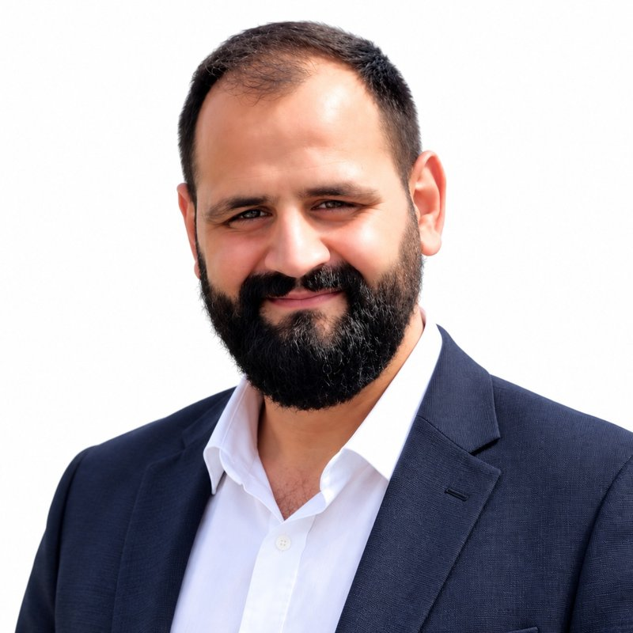
نبذة مهنية
بين التدريب الريادي والعمل الزراعي الميداني
تدريب قائم على التجربة
مدرب معتمد بمنهجية CEFE. نفّذت 6 دورات في مهارات تطوير الأعمال لـ 132 مستفيداً، بأساليب تشاركية وتمارين محاكاة.
من الفكرة إلى المنحة
أرافق المستفيدين بجلسات متابعة فردية لإعداد مخططات الأعمال، والجاهزية للمنح، ثم الشراء والمتابعة بعد التنفيذ.
تأهيل الخريجين لسوق العمل
دورة مكثفة 5 أيام لخريجي كليات الهندسة: السيرة الذاتية، المقابلات، التفاوض، العمل الجماعي، وحل المشكلات.
الفطر المحاري
أدير مزرعة صغيرة للفطر المحاري منذ 2016، وأقدّم استشارات لتأسيس المزارع، وصمّمت دورة إلكترونية من 6 وحدات.
الخبرات العملية
مسار مهني يجمع العمل الإنساني والتدريب والزراعة
-
مرشد ومدرب أعمال، مشروع RELINK لسبل العيش
- تقديم دورة مهارات التوظيف والمهارات الحياتية (5 أيام) لخريجي الهندسة: دورتان في جبلة واللاذقية (18 مشاركاً لكل منهما).
- تدريب مهارات تطوير الأعمال (BDS) ومنهجية GYB للمستفيدين من المنح، مع إرشاد فردي ومرافقة حتى استلام المنحة والشراء والمتابعة.
- تطبيق مبادئ المساءلة والسرية والحماية في جميع الأنشطة التدريبية.
-
مرشد ومدرب أعمال، مشروع RESTORE لسبل العيش
- تدريب 132 مستفيداً في 6 دورات بمنهجية CEFE (برنامج مكثف 5 أيام، نحو 40 ساعة لكل دورة).
- متابعة 267 مشاركاً في المشروع، والتحقق الميداني من منح المشاريع الصغيرة بالتعاون مع اللجان المجتمعية.
- المشاركة في تقييم الاحتياجات في بلديات بسطا وكمين، وتقييمات سوق العمل وزيارات أصحاب العمل في اللاذقية.
- متابعة التدريب التقني لـ 111 مستفيداً ريفياً في الفطر والدواجن والنباتات الطبية والعطرية والأسمدة وتصنيع الأغذية.
- إدخال بيانات المستفيدين ومخططات الأعمال والمتابعة الدورية على Kobo Toolbox وExcel.
-
مدرب إلكتروني، دورة زراعة الفطر المحاري
- تصميم وتسجيل دورة من 6 وحدات مبنية على تجربة ميدانية في إدارة مزرعة فطر.
- تحويل الخبرة التقنية إلى دروس منظمة تساعد المتعلمين على بدء إنتاج صغير للتشغيل الذاتي وتوليد الدخل.
-
صاحب مزرعة فطر محاري ومستشار زراعي مستقل
- إدارة مزرعة موسمية صغيرة في القرية (1–2 موسم إنتاج سنوياً) منذ أيام الدراسة.
- استشارات مدفوعة منذ 2025: تأسيس والإشراف على 3 مزارع صغيرة، واستشارات عن بُعد.
-
مدرب زراعة الفطر المحاري (تطوعي)
- تدريب عملي 5 أيام لـ 38 مستفيداً، مع متابعة عن بُعد لمدة شهرين بعد التدريب.
-
مشرف زراعي (دوام جزئي)
- الإشراف على بستان حمضيات بمساحة 19 دونماً ونحو 430 شجرة، وتوجيه العمال للممارسات الزراعية السليمة.
التعليم والبحث العلمي
كلية الهندسة الزراعية، جامعة اللاذقية، قسم البساتين
دراسة تأثير إضافة نخالة القمح ونشاء الذرة إلى وسط زراعة الفطر المحاري Pleurotus ostreatus كمنشط للركيزة في نمو وإنتاج الفطر ونوعيته
Effect of wheat bran and corn starch supplementation of the growing substrate on the growth, yield and quality of oyster mushroom (Pleurotus ostreatus)
ماجستير في العلوم الزراعية
جامعة اللاذقية
إجازة في الهندسة الزراعية، اختصاص البساتين
جامعة اللاذقية (تشرين سابقاً)
العمل الميداني في مزارع الفطر
إنتاج الفطر المحاري، وتأسيس المزارع، والتجارب البحثية
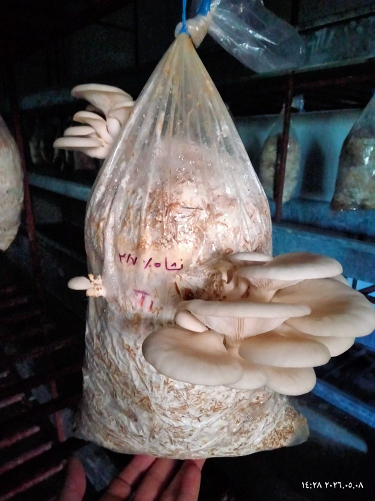
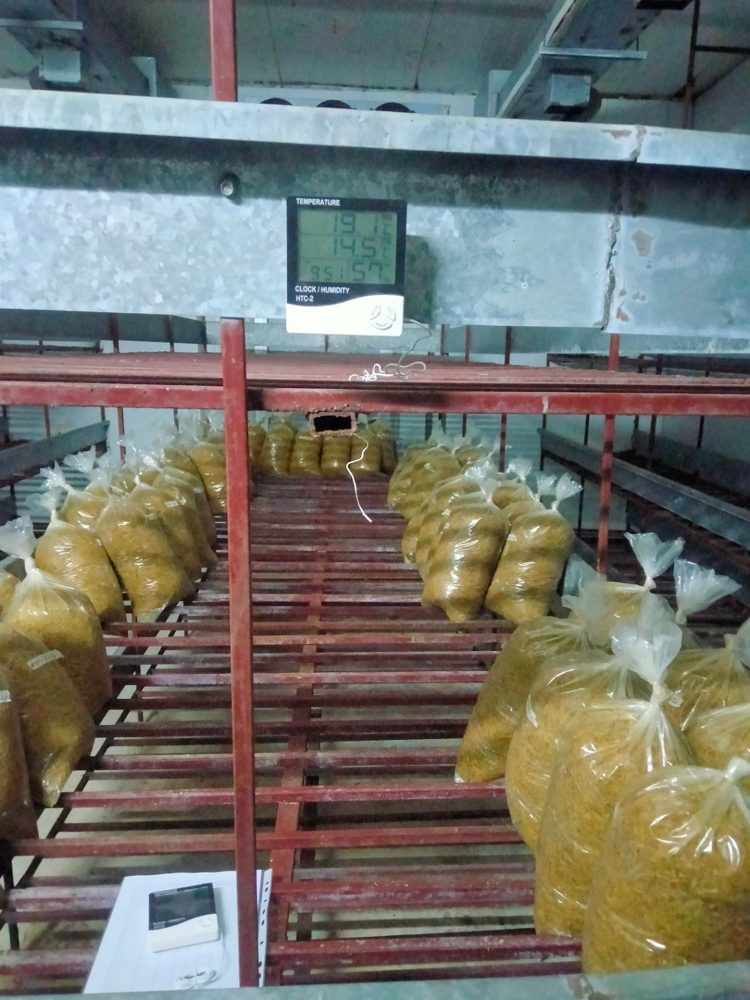
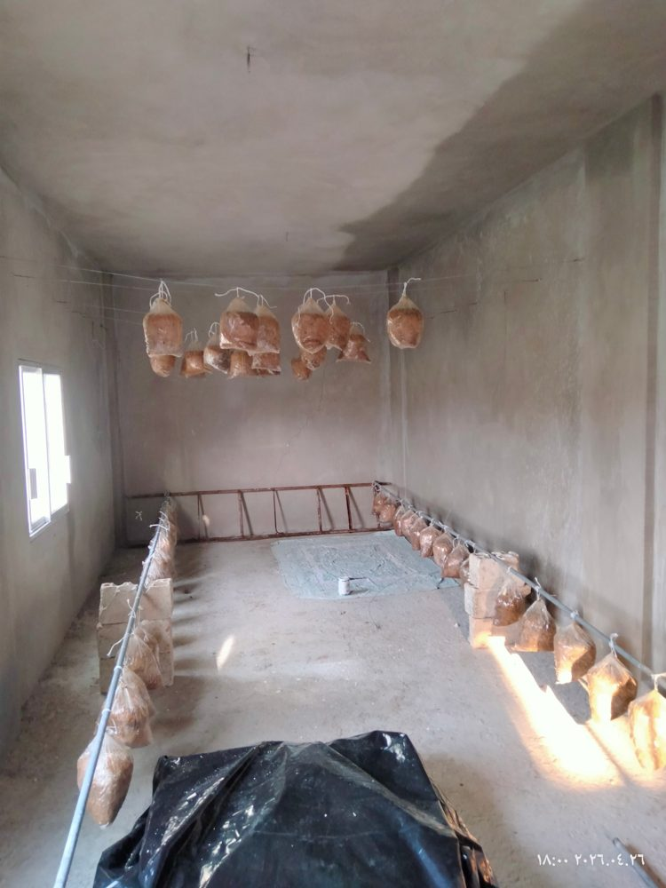
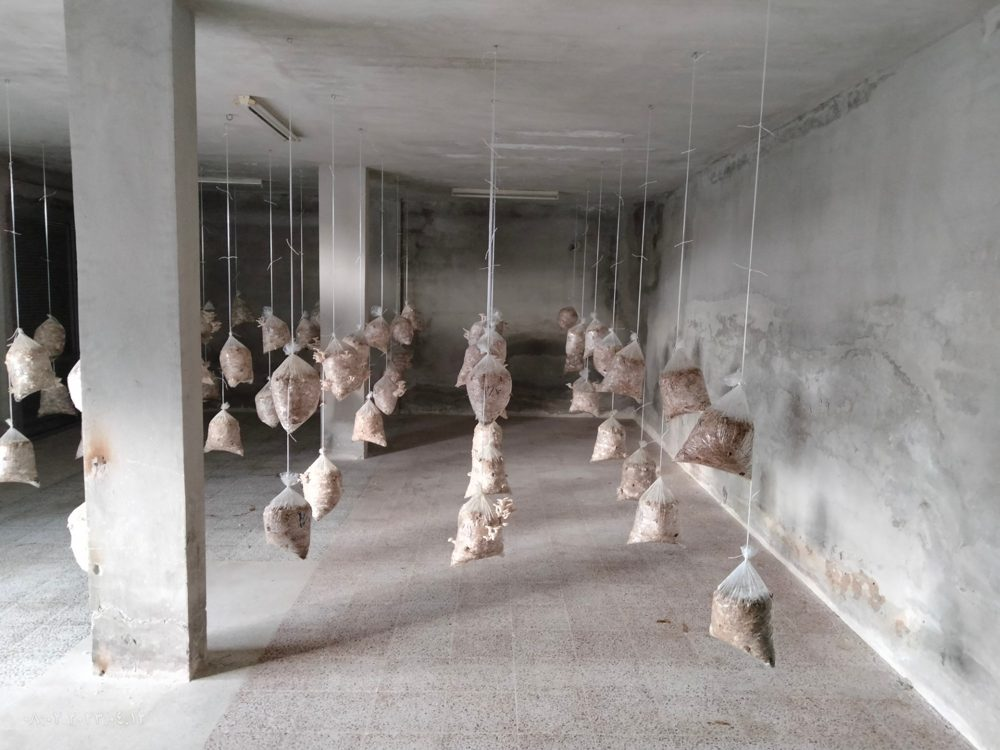
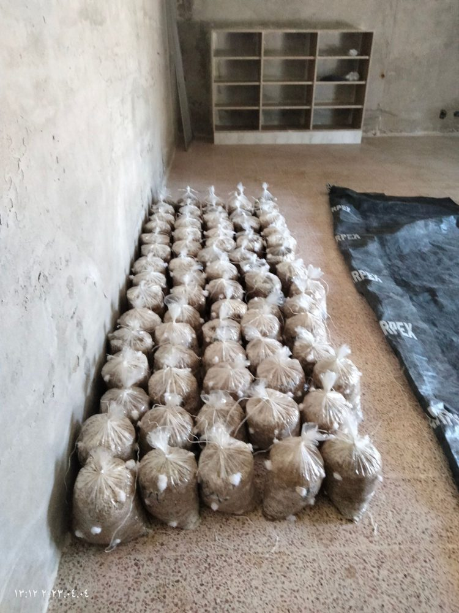
من التدريب
نماذج من الجلسات التدريبية والإرشادية
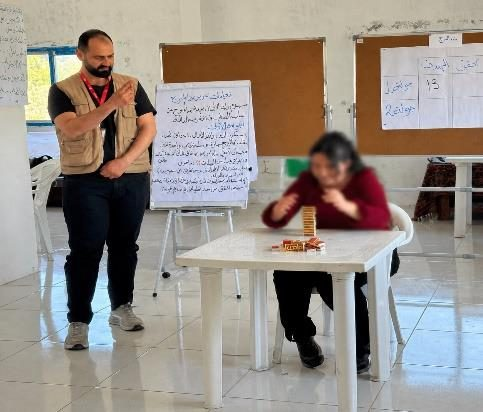
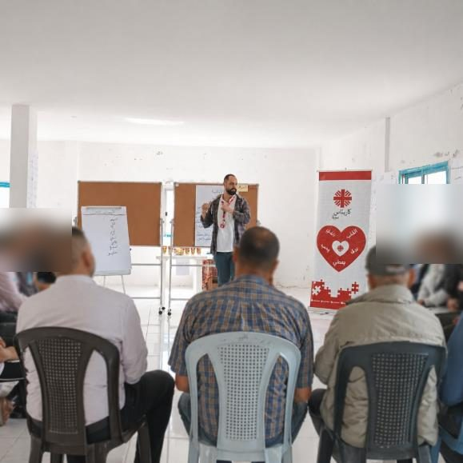
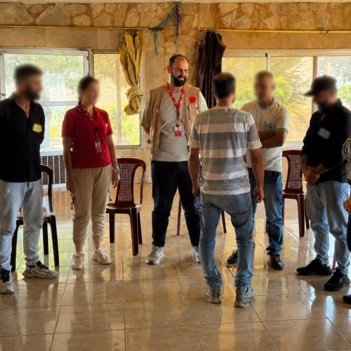
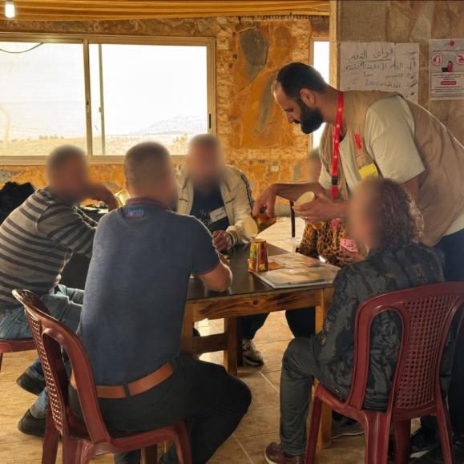
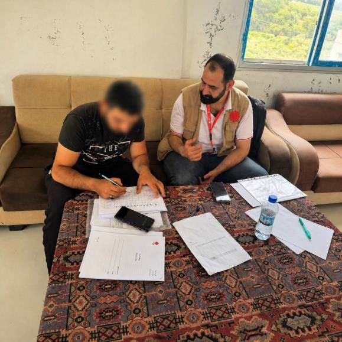
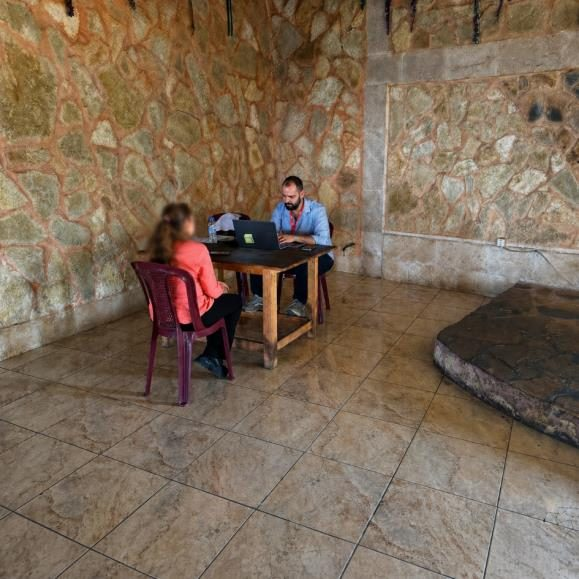
تم طمس وجوه المستفيدين في الصور حفاظاً على الخصوصية.
الشهادات والدورات
اضغط على أي شهادة لعرضها بالحجم الكامل
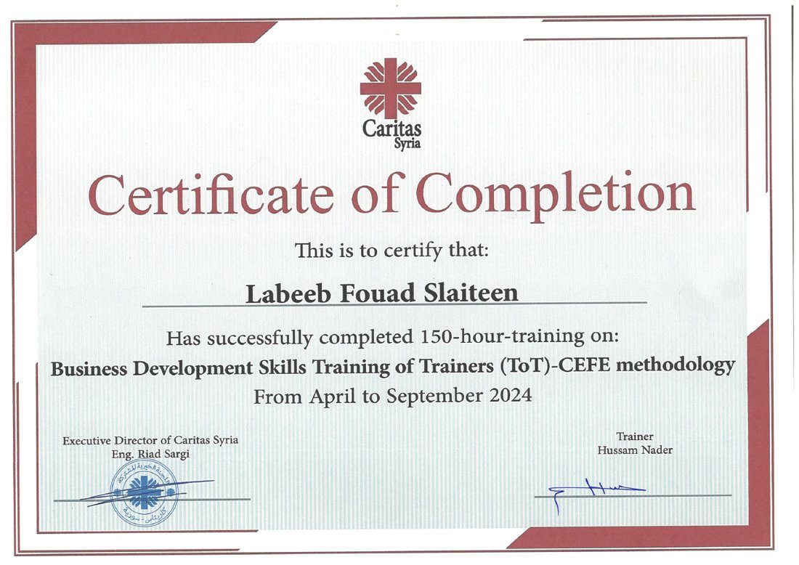
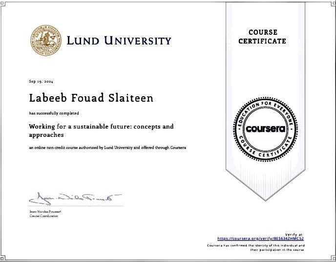
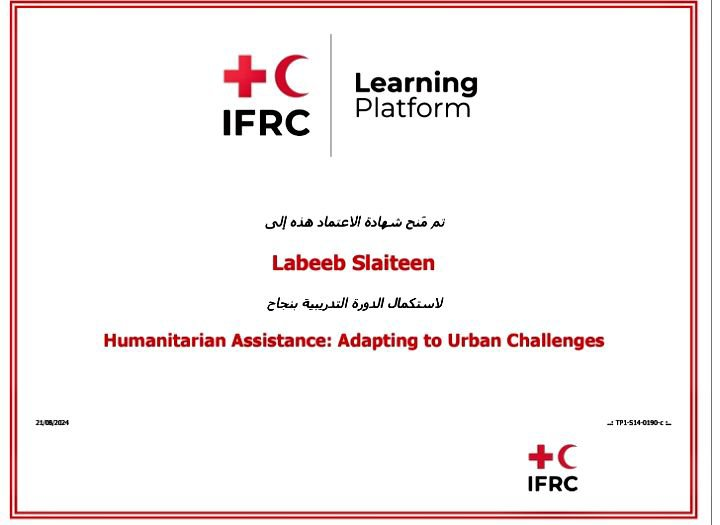
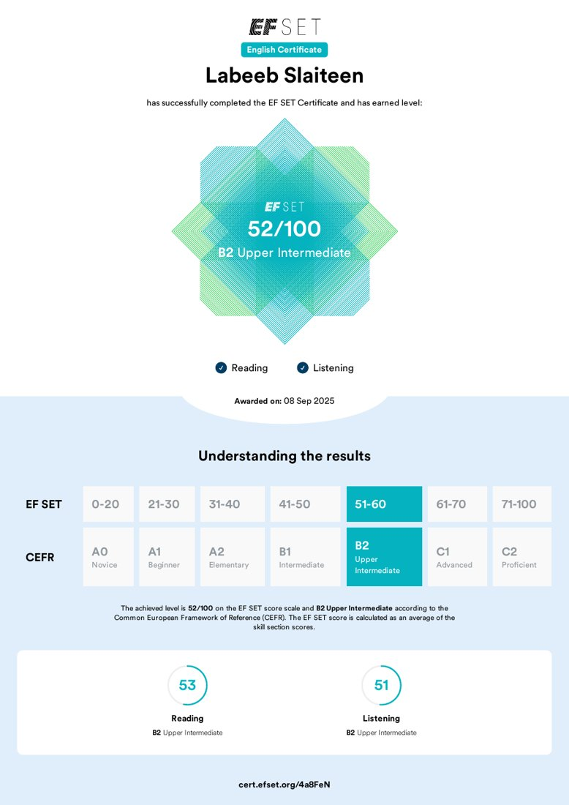
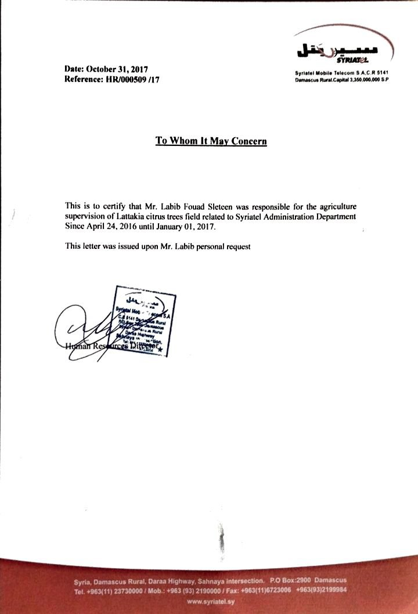
دورات أخرى
Project Management: Life Cycle and Project Planning
Politecnico di Milano · Coursera · 01/2025
المهارات
أدوات ومنهجيات أعمل بها
التدريب والتيسير
خدمات تطوير الأعمال
سبل العيش والبيانات
الزراعة
اللغات: العربية (اللغة الأم) · الإنكليزية (مستوى مهني جيد، B2)
تواصل معي
للتدريب، أو الاستشارات الزراعية، أو فرص التعاون في برامج سبل العيش